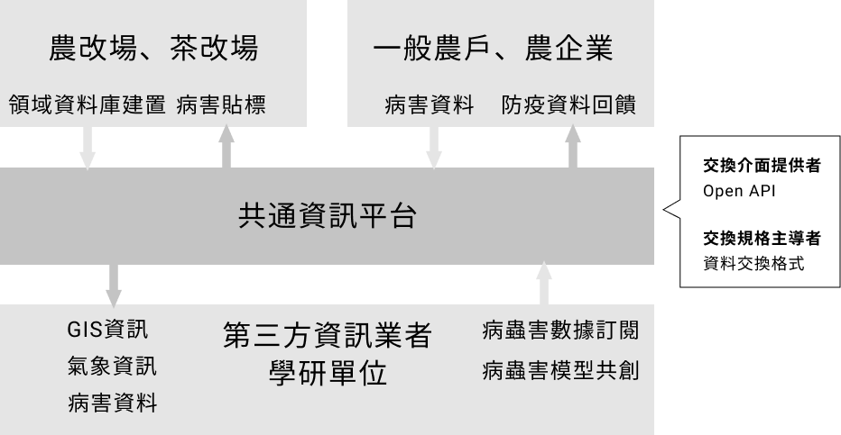

智農聯盟生產共通數位服務
智慧用藥
以病蟲害匯集機制與服務達成精準用藥
共通資訊平台整合多方農業專業資訊，利於發展領航產業共通數位服務，
考慮領航產業皆有病蟲草害之問題，
以農試所農藥與肥料商品資料，配合茶葉示範基地之病蟲害資訊
提供智慧生產共通數位服務應用示範。
智能決策數位服務發展進程
1
作物病蟲害、農藥肥OPEN API
2
茶產業溯源資料、病蟲害分佈視覺化
3
病蟲害資料匯集機制與服務
智慧用藥數位服務情境概念圖
平台重要功能
Lorem ipsr sit amet, consectet
sit amet, consectet
sit amet, consectet
Lorem ipsr sit amet, consectet
sit amet, consectet
sit amet, consectet
Lorem ipsr sit amet, consectet
sit amet, consectet
sit amet, consectet